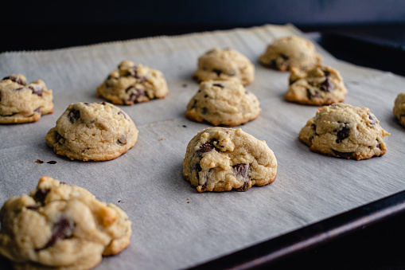
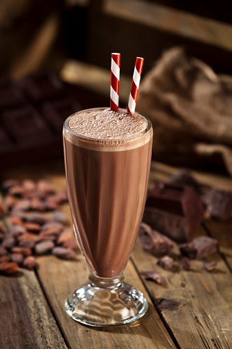

Delicious cookies made in-house!

Our pastry chefs know how to make good cookies. We don't use anything unnatural and we can give you a tour on how it's made. More on that in the Process.
- We also serve more than just cookies; we make malts, milkshakes, and ice cream as well!
- Due to a supply shortage, our former item of macharons are no longer available until further notice. Thank you for your patience!

Josh and Justin's cookies
308 Main Street Road
Salt Lake City, UT 84044
800-395-7567
308 Main Street Road
Salt Lake City, UT 84044
800-395-7567